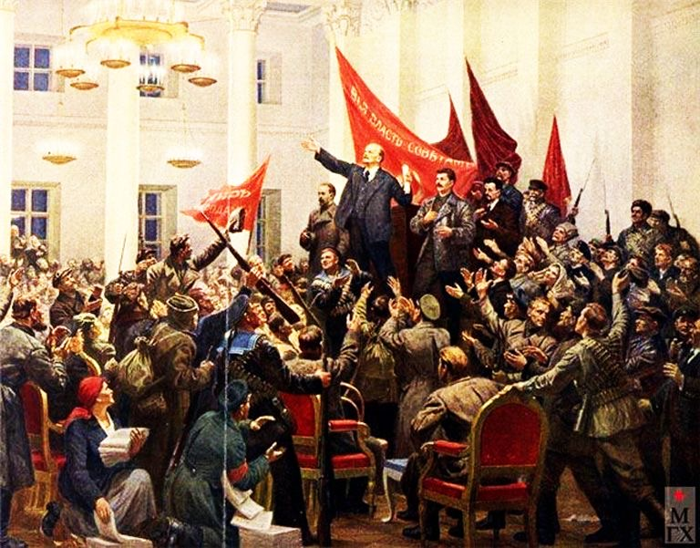
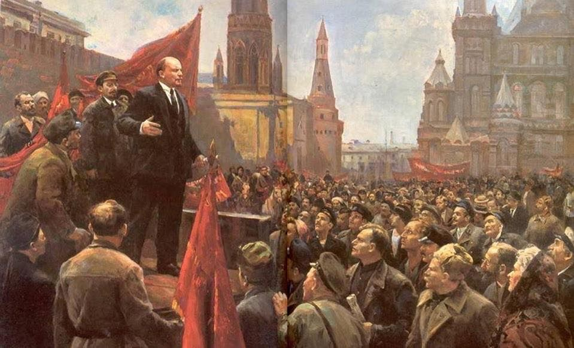
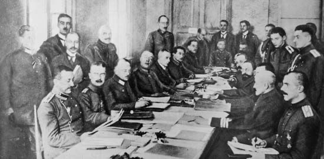

As the Bolsheviks' founder, Lenin led the October Revolution, which established the world's first communist state. His government won the Russian Civil War and created a one-party state under the Communist Party. Ideologically a Marxist, his developments to the ideology are called Leninism.
Achievements

1. Leading the October Revolution (1917)

2. Creating the Soviet State

3. Ending World War I: He pulled Russia out of the war by signing the Treaty of Brest-Litovsk in 1918.
4. Civil War Victory: Lenin led the Bolsheviks to victory in the brutal Russian Civil War (1917–1922) against the anti-communist White Army and foreign interventionists
Popular Lenin Books
The State and Revolution Vladimir Lenin.
Imperialism: The Highest Stage of Capitalism Vladimir Lenin.
What Is to Be Done? Vladimir Lenin.